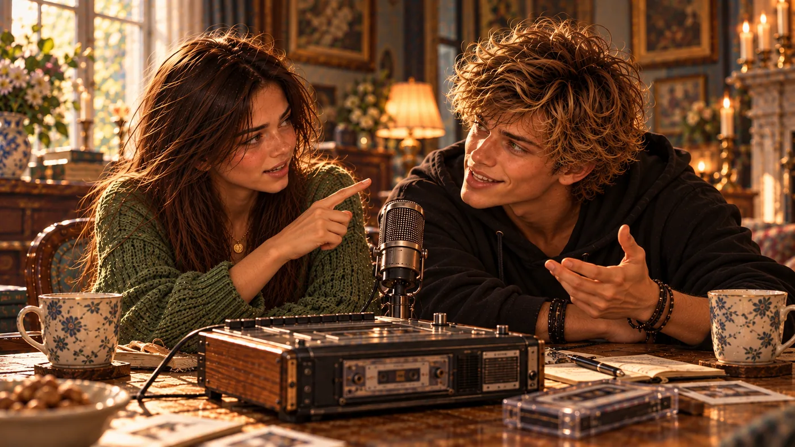

Zurück
Hinter den Kulissen von Klüpfenhagen
Elodies Geheimnis – wie alles begann. Drück auf Play und hör rein!

Elodies Geheimnis
Wie alles begann
PLAY
STOP
−20
−10
−5
0
+3
0:00 / 3:35
Audio herunterladen (MP3)